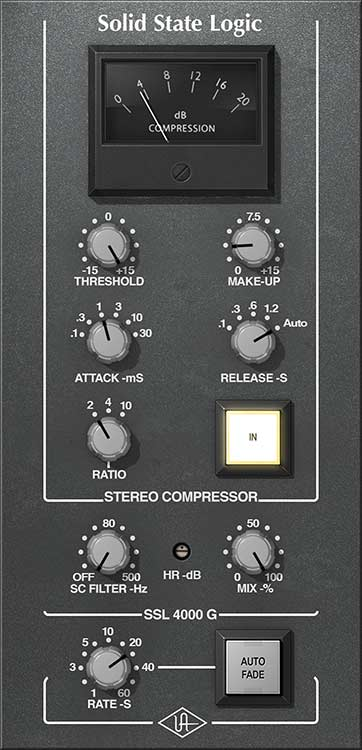
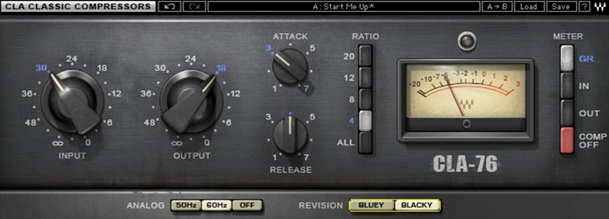
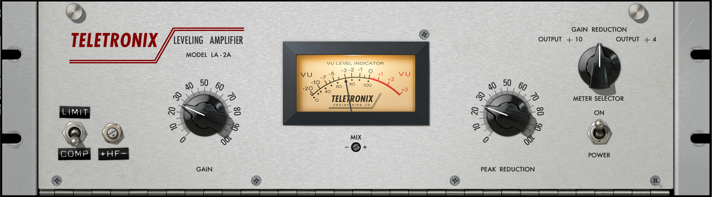
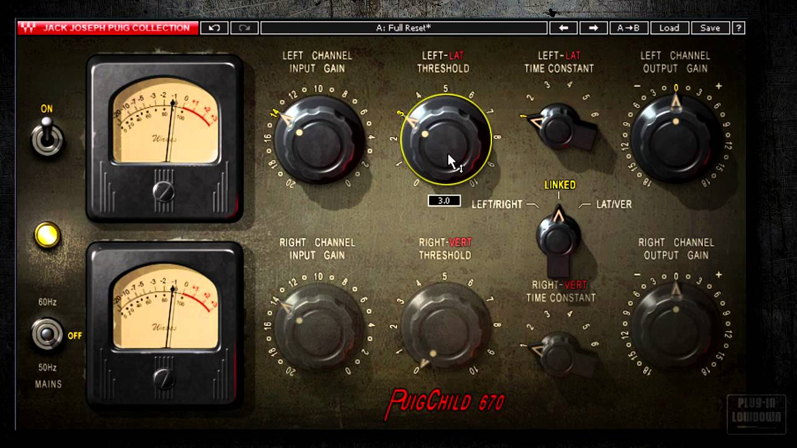

Procesos de la produccíon musical
Composición
La composición consiste en crear una estructura de la canción incluyendo la melodía, la letra, el ritmo y la armonía.
Grabación
La grabación consiste en registrar las partes instrumentales y vocales Esto puede ser en vivo o por pistas individuales, utilizando una variedad de instrumentos y equipos
Edición
En la edición se manipulan las pistas de audio ya sea para eliminar partes en blanco, elección de mejores tomas y fades out y fade in
Mezcla
La mezcla consiste en que varios instrumentos individuales suenen todos juntos, además se trata de equilibrar todas las pistas de audio utilizando ecualizadores para eliminar o aumentar frecuencias y compresores para reducir la dinámica de una pista o varias pistas de audio
Tipos de compresores
Masterización
La masterización consiste en pulir y optimizar el sonido global para después distribuirlo, ajustando frecuencias y volumenes para lograr un sonido agradable en todo tipo de dispositivos
VCA
Los compresores VCA (Voltage controlled Amplifier) o Amplificador Controlado por Voltaje es un compresor muy preciso, rápido y transparente. No añade mucho color al sonido por lo cual es ideal para cuando simplemente quieres controlar la dinámica sin afectar al timbre del sonido.
Uno de los compresores más famosos de este tipo es el SSL G

FET
Los compresores FET(Field Effect Transistor) o Transistor de Efecto de Campo es un compresor extremadamente rápido y añade mucho carácter, saturación y color cuando se abusa de él.
El compresor tipo FET más famoso es el Urei 1176.

Óptico
Los compresores Ópticos son muy suaves, lentos y naturales. Utiliza un sistema único de bombilla y un sensor óptico. Su attack y release no son fijos, sino que reaccionan conforme a la señal.
El compresor óptico más famoso es el Teletronix LA-2A

Vari-Mu
Los compresores Vari-Mu usa tubos vacíos (válvulas) para la compresión. Es lento, denso, rico y añade calidez y cuerpo a la pista.
El compresor Vari-Mu más famoso es el Fairchild 670.
